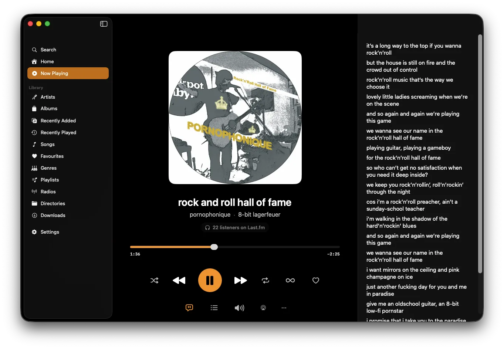
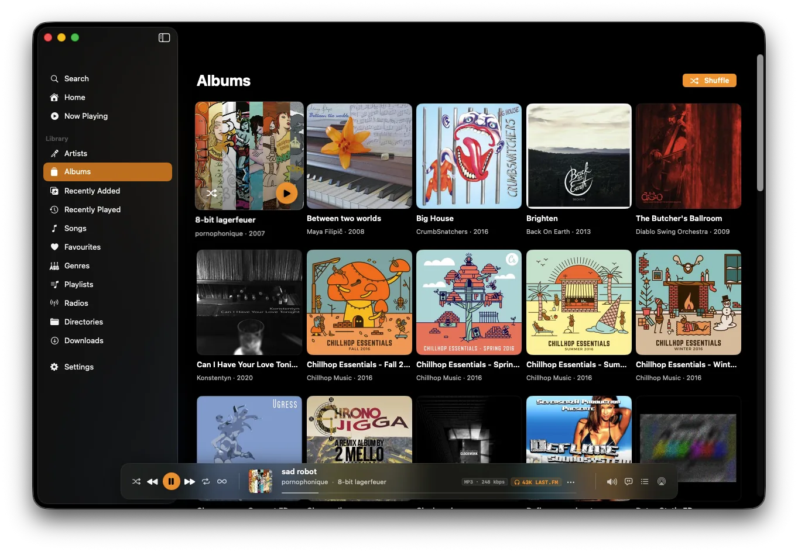
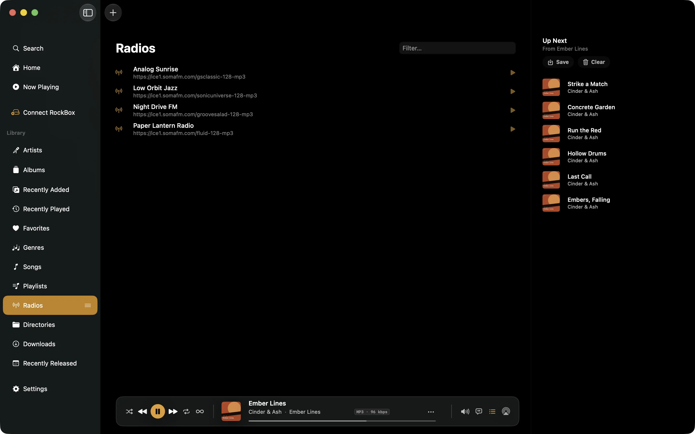
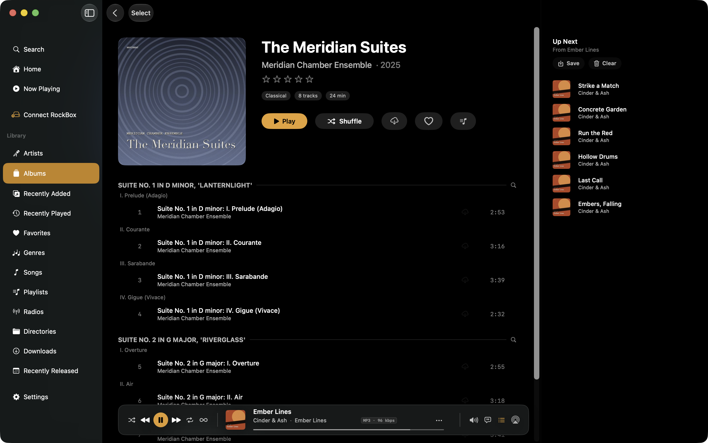
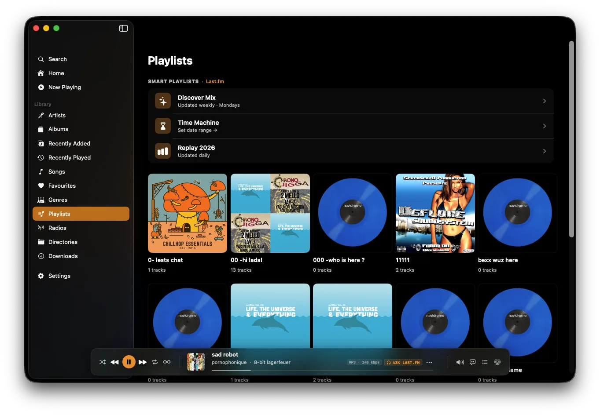
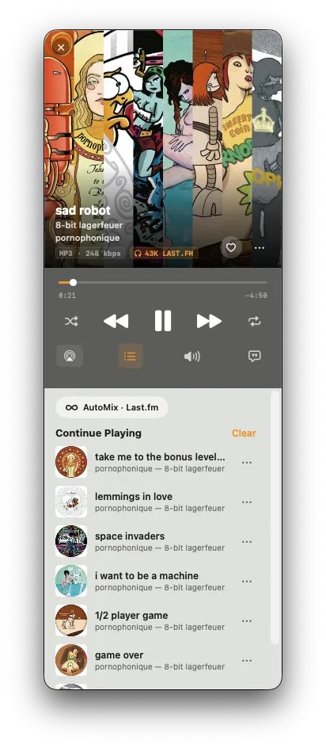
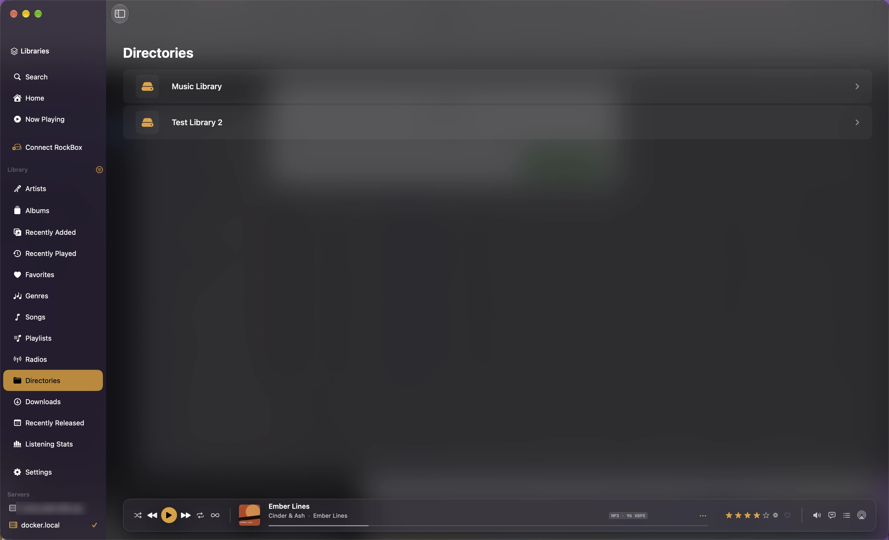

01 / Home
Sidebar, Featured Album, Recently Played.
The sidebar gives you instant access to Home, Artists, Albums, Playlists, Radio, and Directories. The main area opens on a Featured Album hero with your recently played albums below.
NaviBeat · macOS 15+
A beautifully native SwiftUI music player for Navidrome, Airsonic, Gonic, or any OpenSubsonic server. Mini Player with pin-on-top, time-synced lyrics, AutoMix, sleep timer, and directory browser. No Electron, no Catalyst, just native Mac code.
macOS 15+
M1 & Intel
0 SDKs
No analytics. No trackers.
Mini Player
Pin-on-top · compact mode
$5.99 once
Universal Purchase · all Apple devices
Every screen
Sidebar navigation, keyboard shortcuts, menu bar mini player, drag-and-drop queue reordering. Every detail of the macOS platform considered: not a port, not a compromise. Downloads now keep a retryable history with live speed and queue stats, and Prefer Downloaded Music, in Settings, keeps local copies playing from disk even when you are back online.
01 / Home
The sidebar gives you instant access to Home, Artists, Albums, Playlists, Radio, and Directories. The main area opens on a Featured Album hero with your recently played albums below.

02 / Mini Player
Switch to the Mini Player and it floats above every other window, even full-screen video. Album art, track name, transport controls. Resize it to taste. One keyboard shortcut to show or hide it.

03 / Time-Synced Lyrics
Open the lyrics panel alongside your library, or expand it to fill the window. Drop an .lrc file next to your track or let NaviBeat pull synced lyrics from your server automatically.

04 / Albums
Albums grid with cover art, artist name, release year, and genre. Sort by recently added, alphabetically, by artist, or by year. Click any album for the full track list with Hi-Res badges.

05 / Internet Radio
Internet radio stations configured in Navidrome appear in the Radio sidebar item. One click to start a stream. Station name and now-playing metadata show in the toolbar and Mini Player.

06 / Classical
Albums tagged as classical group by work on Mac too, with movements listed in order beneath each one. A suite stays one work instead of several unrelated tracks. Needs a Navidrome 0.63+ server for the work and movement tags.
All screenshots
Home
Albums
Artists

Playlists
Lyrics panel
Mini Player
Mini Player + Lyrics

Up Next queue
Internet Radio

Directories
Classical
Launch price
One purchase. Every device.
Mac, Apple TV, iPhone, iPad, Apple Watch. Forever.